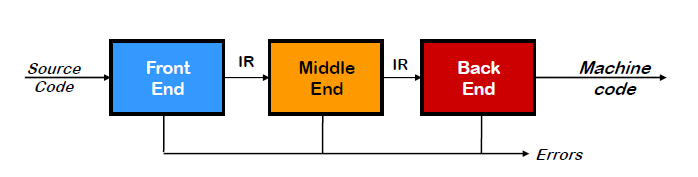
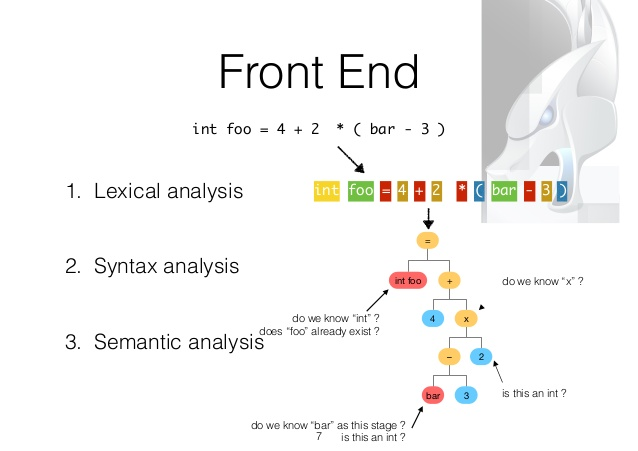

Full name: Microsoft.FSharp.Core.Operators.not
module List
from Microsoft.FSharp.Collections
--------------------
type List<'T> =
| ( [] )
| ( :: ) of Head: 'T * Tail: 'T list
interface IEnumerable
interface IEnumerable<'T>
member Head : 'T
member IsEmpty : bool
member Item : index:int -> 'T with get
member Length : int
member Tail : 'T list
static member Cons : head:'T * tail:'T list -> 'T list
static member Empty : 'T list
Full name: Microsoft.FSharp.Collections.List<_>
Full name: Microsoft.FSharp.Collections.List.map
Full name: Microsoft.FSharp.Collections.List.reduce
Full name: Microsoft.FSharp.Collections.List.sum
val string : value:'T -> string
Full name: Microsoft.FSharp.Core.Operators.string
--------------------
type string = System.String
Full name: Microsoft.FSharp.Core.string
val float : value:'T -> float (requires member op_Explicit)
Full name: Microsoft.FSharp.Core.Operators.float
--------------------
type float = System.Double
Full name: Microsoft.FSharp.Core.float
--------------------
type float<'Measure> = float
Full name: Microsoft.FSharp.Core.float<_>
Full name: Microsoft.FSharp.Core.ExtraTopLevelOperators.printfn
Full name: Microsoft.FSharp.Collections.list<_>
val int : value:'T -> int (requires member op_Explicit)
Full name: Microsoft.FSharp.Core.Operators.int
--------------------
type int = int32
Full name: Microsoft.FSharp.Core.int
--------------------
type int<'Measure> = int
Full name: Microsoft.FSharp.Core.int<_>
from Microsoft.FSharp.Core
Full name: Microsoft.FSharp.Core.bool
Why compilers?
- It is fun
- Everyone needs to know this
- It is (usually) much easier than you think it is
- BTM must live!
Why F#
- It is fun :D
- Language itself is very well suited for compilers
- based on OCaml
- Has great tools (FsLexYacc, FParsec)
- Targets .NET (familiarity, decent IL)
- Learning F# is good for your mental health :)
Overview of today's presentation
- What we want to write (in the end)
- Quick (and not so accurate) history of PLs
- 10min intro to F#
- A quick intro to how compilers work
- Let's write (in real time) a small interpreter for our language
What we want to write (in the end)
- A simple Rule Engine (similar to how we use CodeEffects)
- Receive some model (object) as an input
- Check some condition, return bool
1:
|
not(Amount < 10) and HasTag('vip') = true |
1: 2: 3: 4: 5: 6: 7: 8: 9: 10: 11: 12: 13: 14: 15: |
public class Model
{
public int Amount { get; set; }
public bool HasTag(string tag) {
return _tags.Contains(tag);
}
public Model(int amount, string[] tags)
{
Amount = amount;
_tags = tags;
}
private readonly string[] _tags;
}
|
1: 2: 3: 4: 5: |
var rule = "not(Amount < 10) and HasTag('vip') = true";
var compiled = RuleCompiler.Compile<Model>(rule);
var model = new Model(42, new[] { "vip" });
var result = compiled(model);
Console.WriteLine(result);
|
DEMO
Quick (and not so accurate) history of PLs
50s-70s
Back in the 50s-70s, programming languages were a BigDeal, with large investments, upfront planning, and standardization committees (Ada is a great example)
50s-70s examples
- Fortran, 50s, originally developed by IBM as part of their core business in computing machines.
- Cobol, late 50s, designed by a large committee from the onset, sponsored by the DoD.
- Lisp, late 50s, main project occupying 2 professors at MIT and their students, with the grand goal of producing an algebraic list processing language for artificial intelligence work, also funded by the DoD.
- C, early 70s, part of the large investment that Bell Labs was doing in the development of Unix.
- Smalltalk, early 70s, part of a large investment that Xerox did in "inventing the future" of computers.
80s
Things have changed dramatically during the 80s.
- Decent middle-level languages (C, Pascal) became very popular.
- Parsing and lexing were considered a solved problem.
- A lot of good and well-tested tools were written.
90s
Since the 90s, a considerable percentage of new languages that ended up being very popular were designed by lone programmers, some of them kids with no research inclination, some as a side hobby.
90s examples
- PHP, by Rasmus Lerdorf, 1994, originally used for tracking visits to his online resume
- JavaScript, by Brendan Eich, 1995, "Plus, I had to be done in ten days or something worse than JS would have happened."
- Python, by Guido van Rossum, 1990, "I was looking for a 'hobby' programming project"
- Ruby, by Yukihiro 'Matz' Matsumoto, 1994, "I wanted a scripting language that was more powerful than Perl"
Moral of the story
There is a lot of fun in designing new languages, but this fun is not an exclusive right of researchers with Ph.Ds.
Given all the knowledge about programming languages these days, anyone can do it.
And many do.
Go ahead and write something ;)
It will be fun!
10min intro to F#
1: 2: 3: 4: |
// The "let" keyword defines an (immutable) value let myInt = 5 let myFloat = 3.14 let myString = "hello" //note that no types needed |
1: 2: 3: 4: |
// ======== Lists ========= let oneToFive = [1;2;3;4;5] List.map ((+) 2) oneToFive // [3;4;5;6;7] List.reduce (+) oneToFive // 15 |
1: 2: 3: 4: 5: 6: 7: 8: 9: 10: 11: 12: |
// ======== Functions ======== let square x = x * x square 3 // In F# there is no "return" keyword. A function always // returns the value of the last expression used. let add x y = // F# is indentation-based language x + y // (like Python and Haskell) add 2 3 let add1 = add 1 add1 10 |
1: 2: 3: 4: 5: 6: 7: 8: 9: 10: |
// ====== Pipes ======= square 3 3 |> square 3 |> square |> add 10 // sumOfSquaresTo100 List.sum ( List.map square [1..100] ) [1..100] |> List.map square |> List.sum [1..100] |> List.map (fun x-> x * x) |> List.sum |
1: 2: 3: 4: 5: 6: 7: 8: 9: 10: 11: 12: 13: 14: 15: |
// ========= Complex Data Types ========= //tuples are quick 'n easy anonymous types let twoTuple = (1, 2) let threeTuple = ("a", 2, true) //record types have named fields type Person = { First:string; Last:string } let person1 = { First="john"; Last="Doe" } //union types have choices type Temp = | DegreesC of float | DegreesF of float let temp = DegreesF 98.6 |
1: 2: 3: 4: 5: 6: 7: 8: 9: 10: 11: |
// ======== Pattern Matching ======== // Match..with.. is a supercharged case/switch statement. let printTemp temp = match temp with | DegreesF f -> printfn "%f degrees F" f | DegreesC c -> printfn "%f degrees C" c let printTemp' = function | DegreesF f -> printfn "%f degrees F" f | DegreesC c -> printfn "%f degrees C" c |
A quick intro to how compilers work

Frontend

Backend

Always start in the middle!
- More freedom to experiment
- Your choice of AST will always be wrong :)
- You want to iterate quickly
- Changing Interpreter is easy
- Changing Parser and Code Generator is hard
And you may find out that you don't even need an external language.
Internal DSL may serve your goal pretty well.
Let's write (in real time) a small interpreter for our language
1: 2: 3: 4: 5: 6: 7: 8: 9: 10: 11: 12: 13: 14: 15: 16: |
// not(Amount < 10) and HasTag('vip') = true type complexBoolExp = | And of complexBoolExp list | Or of complexBoolExp list | Not of complexBoolExp | Comparison of valueExp * op * valueExp and op = Eq | Lt | Gt and identifier = string and valueExp = | Constant of constant | Property of identifier | Func of identifier * valueExp list and constant = | Int of int | String of string | Bool of bool |
1: 2: 3: 4: 5: 6: 7: 8: 9: 10: 11: 12: |
// Amount < 10 let checkAmount = Comparison( Property "Amount", Lt, Constant(Int 10)) // HasTag('vip') = true let hasVipTag = Comparison( Func("HasTag", [Constant(String "vip")]), Eq, Constant(Bool true)) // not(Amount < 10) and (HasTag('vip') = true) let complexExp = And([Not(checkAmount); hasVipTag]) |